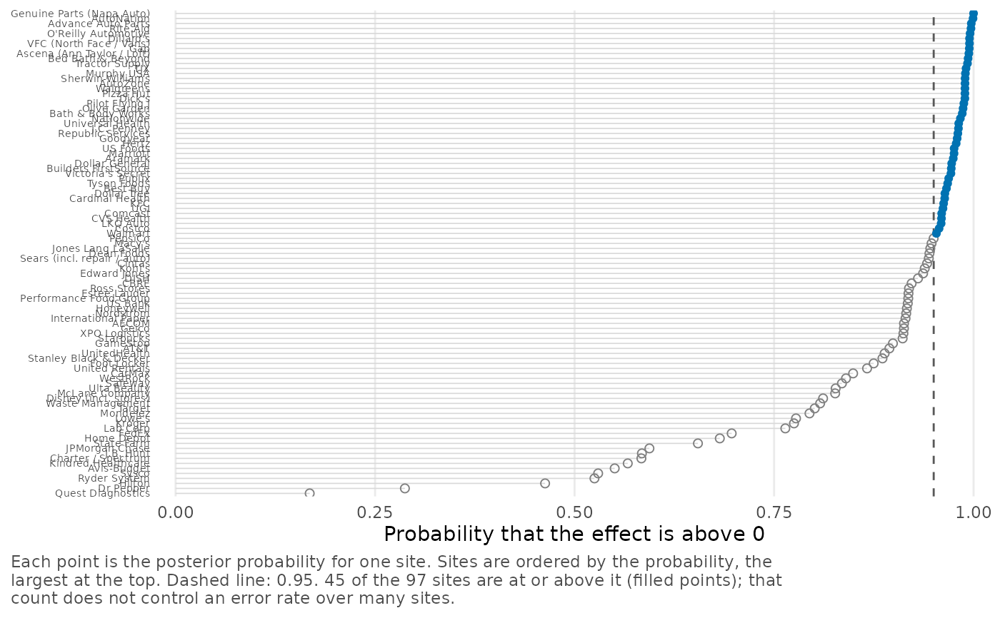
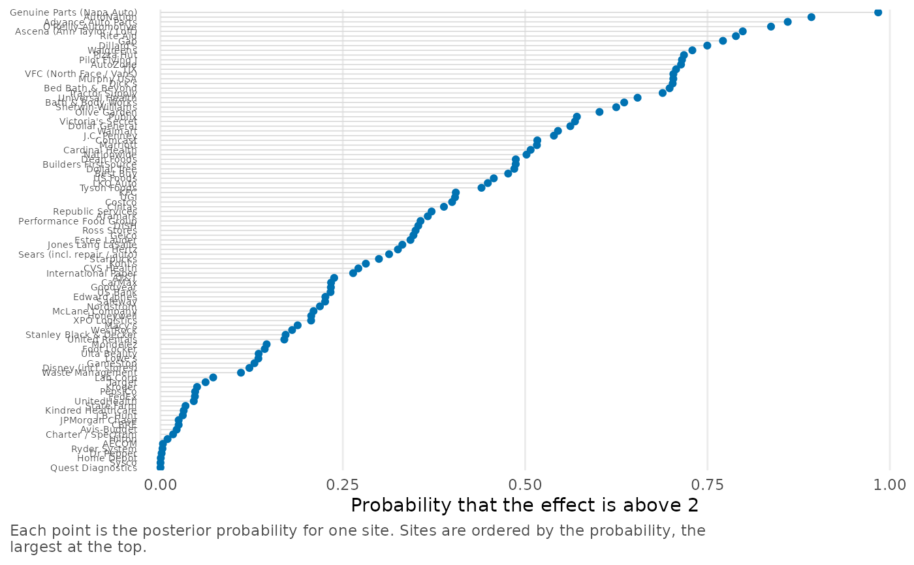
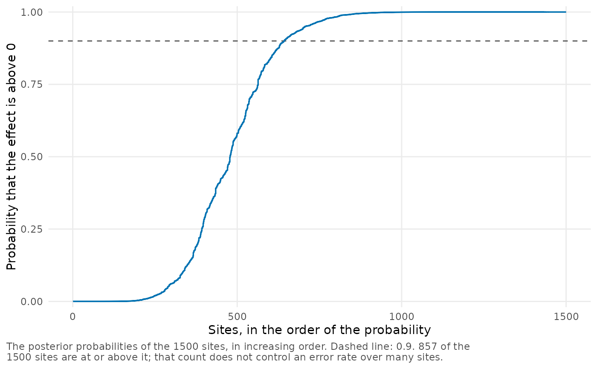

Plot the exceedance probabilities of the site effects
Source:R/plot-exceedance.R
plot_exceedance.RdFor each site, plot_exceedance() shows the exceedance probability,
i.e., the posterior probability that the effect is above (or below) a
threshold, as computed by exceedance_prob(). If cutoff is specified,
a line marks that probability and the caption gives the number of sites
that reach it.
Usage
plot_exceedance(
x,
threshold = 0,
direction = c("above", "below"),
sort = TRUE,
cutoff = NULL,
max_sites = 100,
scale = 1,
...
)Arguments
- x
A
bef_fitobject created bybayes_efron_fit().- threshold
Threshold for the effects, a number in the units of the estimates.
- direction
One of
"above"(the default) for the probability that the effect is greater thanthreshold, or"below"for the probability that it is not.- sort
If
TRUE(the default), the sites are ordered by their probabilities. IfFALSE, they are in the order of the data.- cutoff
An optional probability between 0 and 1, which is marked by a dashed line.
- max_sites
Maximum number of sites that are plotted with labels. See Details for how a larger number of sites is shown.
- scale
Positive number by which
thresholdis multiplied in the axis label. See Details.- ...
These dots are for future extensions and must be empty.
Details
Up to max_sites sites are shown as labeled points. If there are more,
the probabilities are shown as a curve in increasing order or, when
sort = FALSE, as points in the order of the data.
threshold is specified in the units of the estimates, as in
exceedance_prob(). scale only changes the units in which the
threshold appears in the axis label: with threshold = 0.02 and
scale = 100, the label reads "above 2".
The number of sites at or above cutoff is based on the posterior
probability of each site separately. It is not the result of a
procedure that controls an error rate over many sites, as the caption
also notes.
Examples
# The probability that the callback gap of a firm is positive, and the
# firms for which it is at least 0.95.
plot_exceedance(krw_fit, cutoff = 0.95)

# The probability that the gap exceeds 2 percentage points.
plot_exceedance(krw_fit, threshold = 0.02, scale = 100)

# 1,500 sites: a curve.
plot_exceedance(twin_towers_fit, cutoff = 0.9)
#> There are 1500 sites to draw, more than `max_sites` (100), so they are drawn without labels. Raise `max_sites` to label them.
